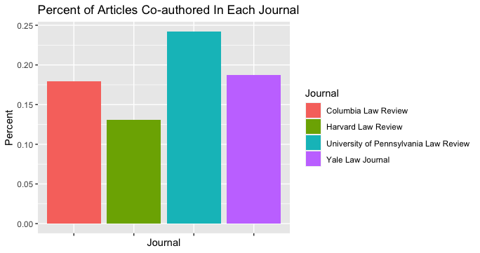
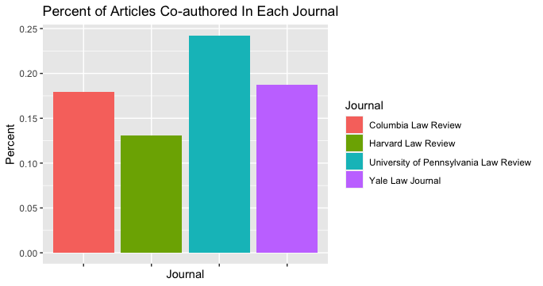
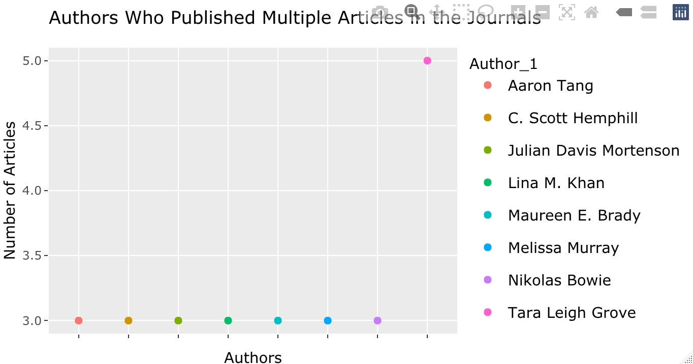

Authors of articles, books, and reports might never get cited by name in legal scholarship and court documents. The Bluebook, the citation manual used by legal scholars, attorneys, and judges, says when there are more than two authors the co-authors’ names may be replaced by “et al.” “when saving space is desired.” 1 The Bluebook used to disfavor including names when there were more than two authors. In the 2000 seventeenth edition it said to use et al. for more than two authors “unless the inclusion of other authors is particularly relevant.” 2 The rule relaxed in the next edition which allowed writers to “[e]ither use the first author’s name followed by “et al.” or list all of the author’s names” but advised “[w]here saving space is desired…the first method is suggested.” 3 A few years later in 2010 the nineteenth edition gave more guidance to cite all of the authors’ names “when listing all…is particularly relevant.” 4 The vague “particularly relevant” guidance has remained unchanged in the twelve years since. 5 At the same time as The Bluebook allows co-authors to remain anonymous in citations, law school administrators increasingly emphasize law faculty’s citation counts in gauging their achievements. As a result law school librarians are devoting more time and resources to helping faculty boost their scholarship’s visibility. Focus on quantifying legal scholars’ scholarly impact accelerated after U.S. News & World Report (USN&WR) announced in Winter 2019 a plan to count citations to faculty’s law journal articles as part of their law school rankings. 6 Criticism from legal scholars and law librarians that USN&WR’s proposed measurement of scholarly impact would undercount interdisciplinary work and be a poor proxy for faculty’s contributions to legal thought caused them to indefinitely postpone the new ranking in Summer 2021. 7 Replacing an author’s name with “et al.” does not cause citation counters to miss crediting them with a citation to their co-authored article. But it does reduce the unnamed scholar’s visibility. Investigating the frequency of co-authorship in a subset of law journal articles is a way to estimate how many authors are being disappeared by The Bluebook’s et al. rule. Analyzing co-authorship data of recently published articles also gives the opportunity to look at how the pandemic may have affected scholarly collaboration.
The dataset is articles published in four law journals from the beginning of 2019 to May 2022. The articles were published in the four journals responsible for editing The Bluebook citation manual: Harvard Law Review, Columbia Law Review, University of Pennsylvania Law Review, and Yale Law Journal. The author generated the dataset with a search in Westlaw’s Secondary Sources > Law Reviews & Journals database. 8 Westlaw is one of three major legal research databases used by law schools, law practices, and courts. 9 The dataset is limited to journals whose editors edit the legal citation manual (The Bluebook) which are housed in law schools USN&WR ranks in the top ten. 10 The dataset is narrowed to these four journals to: have a manageable number of observations to edit; analyze author repetition and “nepotism” (publishing faculty at the journal’s school) within journals; and to represent my interest in the impact of The Bluebook’s “et al.” rule.
The author edited Westlaw’s spreadsheet of search results to separate co-author names included in the single author column into individual columns. In beginning to work with the data using dplyr the author realized the Westlaw search had pulled false hits of articles from the University of the District of Columbia Law Review and removed these rows. The author also realized the dataset included unsigned Harvard Law Review articles summarizing recent case decisions and removed those rows. Varying date formats were standardized in an added publication year column.
The dataset is a non-random sample that may be too limited to reflect any significant trends in co-authorship. It includes only four journals’ content and those journals arguably are homogenous in that they all are edited by students in USN&WR-ranked top ten law schools and are ranked among the top ten most cited journals. 11 The date range also is narrowed to only the past three years, the latter of which law journals delayed publication while adjusting to pandemic workflow changes. Even though the time period was chosen to compare pre- and post-pandemic co-authorship, the actual results may reflect more pre-pandemic than pandemic-generated articles because of the lag between when an article is written, accepted, edited, and finally published. 12
Three of the four journals – Columbia, University of Pennsylvania, and Yale – had nearly the same number of the total 501 articles published during the past three years. Harvard published Columbia published the most articles in the past three years (134) closely followed by University of Pennsylvania (132). Harvard published the least (107), 18% fewer articles than the average number published by the other three journals. But a significant number of unsigned articles about recent leading case decisions published in Harvard Law Review during the time period were removed from the dataset since they did not include information relevant to the author analysis.

Nearly one out of every five of the articles was written by two or more people. More co-authored articles were published in both 2020 and 2021 than pre-pandemic in 2019. The limited four months of data available for 2022 cannot be compared to the prior full three years’.

In the future I would revise this analysis by extending the dataset to 2017 through the end of 2022. Additional years’ data would more reliably show whether there are noticeable publishing trends potentially related to the pandemic. University of Pennsylvania published the most co-authored articles. Almost a quarter of its articles had more than one author. Columbia and Yale published the same number (24). Harvard published less than half as many co-authored articles as UPenn.
 

Only thirteen articles, less than 3% of the total, would be governed by Bluebook’s et al. rule for more than two authors. Most of the multi-authored articles were published in 2019. Columbia Law Review published more of them than any of the other journals.
I struggled to find a reliable way to identify authors who had published multiple articles in the dataset using R. Text analysis tools found five authors who showed up the most in the dataset. Tara Leigh Grove had the most (five articles), and four authors each had three. Unable to figure out how to apply dplyr to assess all of the author column, I grouped and filtered the first author column to find people listed more than once. The dplyr functions identified the same set of authors as the text analysis and added three more.
The Bluebook’s et al. suggestion would potentially anonymize authors of only thirteen of the articles in this dataset. Even so more than 20% of the articles had more than two authors. Multi-authored articles were spread fairly evenly across three of the journals, with UPenn and Harvard as slight outliers, and the years 2020 and 2021, both of which saw more published than pre-pandemic in 2019. The dataset raises more questions than it answers. More years of publications are needed to begin to analyze whether and how the pandemic affected authors’ collaboration on legal scholarship. It would be interesting to extend the dataset also to explore whether UPenn consistently publishes more co-authored articles than the other journals. Further text analysis applied to the dataset’s “title” and “summary” columns could surface the prevalence of article topics across years, publications, and authors. This exercise highlighted for me a few important practices taught in class. First, to identify and understand how the data limits potential analyses and conclusions. Second, R usually offers multiple ways to attempt to answer the same question. This is an asset but requires an R newcomer to systematically organize their knowledge about the program to learn how to use it most effectively. Third, data visualizations can obscure information. A small example of this is how a future first glance at the line graph in this analysis might see a large decrease in co-authored articles in 2022 without realizing the data included only four months of journal issues.